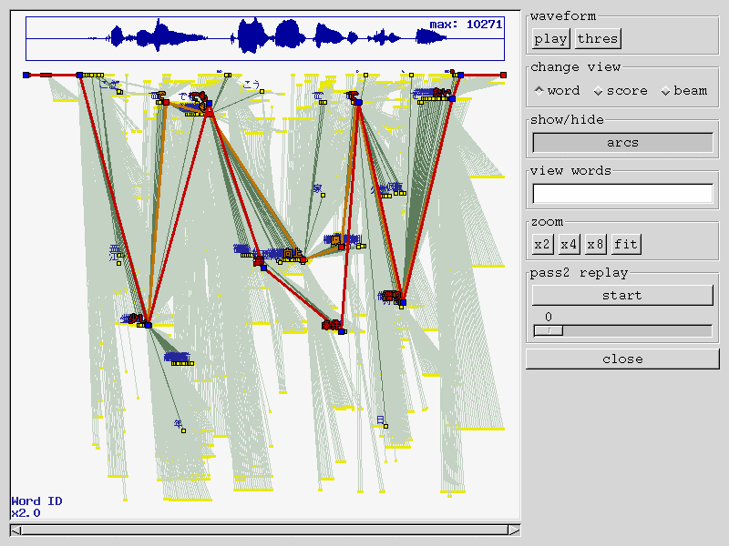
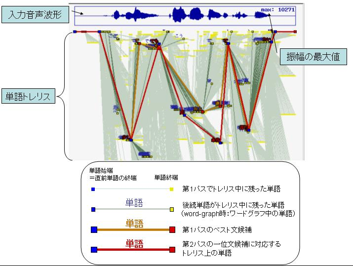

<!DOCTYPE HTML PUBLIC "-//IETF//DTD HTML//EN">
<meta http-equiv="Content-Type" content="text/html; charset=ISO-2022-JP">
<link rel="stylesheet" type="text/css" href="default.css">
<html> <head>
<title>Visualization mode</title>
</head>
<body>
<h1>$BC5:w6u4V$N2D;k2=5!G=$K$D$$$F(B</h1>

Julius-3.4.1 $B$h$jDI2C$5$l$?C5:w6u4V$N2D;k2=5!G=$rMQ$$$k$3$H$G!"(BJulius/Julian$B$NFbIt$G$I$N$h$&$K2rC5:w$,9T$o$l$F$$$k$+$r%0%i%U%#%+%k$KD/$a$k$3$H$,$G$-$^$9!#0J2<$K;HMQJ}K!$K$D$$$F@bL@$7$^$9!#(B

<h2>$B=`Hw(B</h2>
<p>
$BC5:w6u4V$N2D;k2=5!G=$O!"%G%U%)%k%H$G$OL58z$K$J$C$F$$$^$9!#M-8z$K$9$k$K$O!"(B<code>configure</code> $B$K(B <code>--enable-visualize</code> $B%*%W%7%g%s$r$D$1$F%3%s%Q%$%k$7$F$/$@$5$$!#(B
<pre>
 Julius$B$N>l9g!'(B
 % ./configure --enable-visualize
 Julian$B$N>l9g!'(B
 % ./configure --enable-visualize --enable-julian
</pre>
$B$J$*%3%s%Q%$%k$*$h$S<B9T$K$O!"(B X11 $B4D6-$H(B GTK $B%i%$%V%i%j$,I,?\$G$9!#(B
<p>
$B%$%s%9%H!<%k$5$l$F$$$k(B Julius/Julian $B$,!"2D;k2=5!G=IU$-$G%3%s%Q%$%k$5$l$F$$$k$+$I$&$+$rD4$Y$k$K$O!"(B<code>-setting</code> $B%*%W%7%g%s$rMQ$$$^$9!#2<5-$N$h$&$K(BTunings$B$N9`L\$K(B"Visualize"$B$,4^$^$l$F$$$l$P!"$=$N(B Julius/Julian $B$O2D;k2=5!G=IU$-$G%3%s%Q%$%k$5$l$F$$$^$9!#(B
<pre>
% ./julius/julius --setting
Julius rev.3.4.1 (fast)

Engine configuration:
 - Base setup : fast
 - Tunings    : N-gram, <font color="red">Visualize</font>
 - Compiled by: gcc -O6 -fomit-frame-pointer
</pre>
<p>
$B$^$?!"(B<code>sox</code>$B$,%$%s%9%H!<%k$5$l$F$$$l$P!"G'<1BP>]$N2;@<%G!<%?$r$=$N>l$G:F@8$9$k$3$H$b$G$-$^$9!#(B

<h2>$B<B9TJ}K!(B</h2>

Julius/Julian $B$r5/F0$7!"DL>o$I$*$jG'<1$r9T$C$F$/$@$5$$!J%^%$%/F~NO$G$b%U%!%$%kF~NO$G$b9=$$$^$;$s!K!#:G=i$NF~NO$NG'<1$,=*$o$k$H!"0J2<$N$h$&$J%&%#%s%I%&$,8=$l$^$9!J%/%j%C%/$9$k$H3HBg$7$^$9!K!#(B
<p align=left>
<a href="visualize1.gif"></a>
</p>
$B2hLL$N>eIt$OF~NO2;@<$NGH7A$,I=<($5$l$F$*$j!"$=$N2<$K(BJulius $B$NBh(B1$B%Q%9$N7k2L$NC18l%H%l%j%9A4BN$,I=<($5$l$F$$$^$9!JFCD'NL%U%!%$%kF~NO$N>l9g!"2;@<GH7A$OI=<($5$l$^$;$s!K!#(B
<p>
$B>\$7$$%0%i%U$N8+J}$HA`:nJ}K!$K$D$$$F$O$"$H$G=R$Y$^$9$N$G!"$H$j$"$($:1&2<$N!V(Bclose$B!W%\%?%s$r2!$7$F$/$@$5$$!#$9$k$H%&%#%s%I%&$,JD$8!"<!$N2;@<F~NO$X$H?J$_$^$9!#$3$N$h$&$K!"#1F~NO$4$H$KG'<1$,=*$o$k$HF1;~$K$3$N%&%#%s%I%&$,I=<($5$l!"%&%#%s%I%&$,JD$8$i$l$k$^$G(BJulius$B$OF0:n$r0l;~Dd;_$7$^$9!#(B

<h2>$B%0%i%U$N8+J}(B</h2>

Julius/Julian $B$G$O(B2$B%Q%9C5:w$r9T$C$F$$$^$9!#Bh(B1$B%Q%9$G$OF~NO2;@<$KBP$7$F(B2-gram$B$r(B
$BMQ$$$FHf3SE*4JC1$G9bB.$J2;@<G'<1=hM}$r9T$$$^$9$,!"$=$N$H$-$K$=$N2rC5:w2aDx$GEP>l$7$?C18l2>@b$9$Y$F$r!VC18l%H%l%j%9!W$H$$$&7A$GJ]B8$7$^$9!#<!$NBh(B2$B%Q%9$G$O$h$j>\:Y$J(B3-gram$B$rMQ$$$F!"$3$NC18l%H%l%j%9$N>e$GC18l4V$r:F@\B3$7$J$,$i:GL`2r$rC5:w$7!":G=*E*$JG'<17k2L$r=PNO$7$^$9!#(B
<p>
$B?^$N%0%i%U$K$O!"Bh(B1$B%Q%9$N7k2L$NC18l%H%l%j%9A4BN!"$*$h$SBh(B2$B%Q%9$N:G=*7k2L$rI=$7$F$$$^$9!#3F%i%$%s$O$=$l$>$lC18l%H%l%j%9Cf$KB8:_$7$?C18l2>@b$rI=$7$F$$$^$9!#%i%$%s$N1&$NC<E@$OC18l=*C<$N0LCV!":8$NC<E@$OC18l;OC<$N0LCV!J!a$=$ND>A0C18l$N=*C<!K$rI=$7$F$$$^$9!#=D<4$O!"%G%U%)%k%H$G$O2>@bC18l$N(BID$B$G$9!#FC$KM-K>$G$"$C$?<gMW$J2>@bC18l$K$D$$$F$O!"C18l$N=PNOI=5-$,1&$NC<E@IU6a$K=PNO$5$l$^$9!#(B
<p>
$B3F%i%$%s$N6qBNE*$J8+J}$O2<5-$NDL$j$G$9!#FC$K!"%*%l%s%8$N%i%$%s$,Bh(B1$B%Q%9$NG'<17k2L!"@V$N%i%$%s$,Bh(B2$B%Q%9$N:G=*E*$JG'<17k2L$rI=$7$F$$$^$9!#(B
<p align=left>

</p>

<h2>$BBh#2%Q%9$NC5:w2aDx$N:F8=(B</h2>

$B:G=i$N2hLL$G$O>e5-$N$h$&$KBh(B1$B%Q%9$N7k2L$NC18l%H%l%j%96u4V$,I=<($5$l$F$$$^$9$,!"(B
$B<!$K!"$=$N8e$NBh(B2$B%Q%9$G$I$N$h$&$K2>@b$NE83+$,9T$o$l$?$N$+$r8+$F$_$^$7$g$&!#(B
<p>
$BBh(B2$B%Q%9$N%9%?%C%/%G%3!<%G%#%s%0$G$I$N$h$&$K2>@b$,A*Br!&E83+$5$l$F$$$C$?$+$r!"%0%i%U>e$G:F8=$9$k$3$H$,$G$-$^$9!#0J2<$N<j=g$G2aDx$r:F8=$9$k$3$H$,$G$-$^$9!#(B
<ol>
<li>$B%&%#%s%I%&1&B&$N!V(Bpass2 replay$B!W$K$"$k!V(Bstart$B!W%\%?%s$r2!$9(B<br>
$B"*2hLL$,@Z$jBX$o$k!#%0%i%U$N=D<4$OJ82>@b$N$f$&EY$H$J$k!J>e$K9T$/$[$I$f$&EY$,9b$$!K!#(B
<li>$B!V(Bstart$B!W%\%?%s2<$N%9%i%$%@$r1&$XF0$+$7$F$$$/$H!"Bh(B2$B%Q%9$N2>@bE83+$NMM;R$,!V:GL`2>@b<h$j$@$7"*E83+"*3JG<!W$r(B1$B%;%C%H$H$7$F=g$KI=<($5$l$k!#G;$$%i%$%s$,2>@b%9%?%C%/$+$i<h$j=P$5$l$?:GL`2>@b$rI=$7!"$=$3$+$i?-$S$kGv$$%i%$%s$,!"E83+$5$l$F%9%?%C%/$K3JG<$5$l$?<!2>@b$rI=$9!#(B
</ol>
$B%9%i%$%@$rF0$+$9$3$H$G!"G$0U$N;~E@$N2>@bE83+$NMM;R$r8+$k$3$H$,=PMh$^$9!#(B
<p>
$B!V(Bstart$B!W%\%?%s$r$b$&0lEY2!$7$F2r=|$9$k$3$H$G!"85$NC18l%H%l%j%9I=<($KLa$j$^$9!#(B

<h2>$BA`:nJ}K!(B</h2>

$B1&B&$K$"$k%\%?%s$G$O!"B>$K$bC18l%H%l%j%9I=<($N=D<4$N@Z$jBX$($dI=<(G\N($NJQ99!"2;@<$N:F@8$J$I$r9T$&$3$H$,=PMh$^$9!#0J2<$K3F%\%?%s$N5!G=$rNs5s$7$^$9!#(B
<ul>
<li>waveform$B!'GH7A>pJs(B
  <ul>
  <li>$B!V(Bplay$B!W!D2;@<$r:F@8$9$k!JMW(Bsox$B!K(B
  <li>$B!V(Bthres$B!W!D@Z$j=P$7$NogCM$rGH7A>e$K>e=q$-I=<($9$k!#$b$&0lEY2!$9$H>C$($k!#(B
  </ul>
<p>
<li>change view$B!'%0%i%U$N=D<4$rJQ99(B
  <ul>
  <li>$B!V(Bword$B!W!DC18l(BID$B!JC18l$N<-=qEPO?=g!K(B
  <li>$B!V(Bscore$B!W!DN_@Q$f$&EY(B
  <li>$B!V(Bbeam$B!W!D%U%l!<%`$4$H$N0l0L8uJd$+$i$N$f$&EY:9(B
  </ul>
<p>
<li>show/hide$B!'I=<(9`L\$NJQ99(B
  <ul>
  <li>$B!V(Barcs$B!W!D;O=*C<$N4V$N%i%$%s$NItJ,$NI=<($r(B ON/OFF$B$9$k!#(B
  </ul>
<p>
<li>view words$B!'FCDjC18l$N$_I=<((B<br>
  <ul>
  <li>$BJ8;zNs$rF~NO$7$F(BEnter$B$r2!$9$H!"$=$l$rFI$_$K$b$DC18l$N$_$rI=<(!#2?$bF~NO$;$:$K(BEnter$B$GA4I=<($KLa$k!#(B
  </ul>
<p>
<li>zoom$B!';~4V<4!J2#<4!K$NI=<(G\N($NJQ99(B
  <ul>
  <li>x2, x4, x8$B!DF~NO%U%l!<%`$ND9$5$H%&%#%s%I%&$N2#I}$,0lCW$9$k>uBV$r(B1$BG\$H$7$F!"$=$l$>$l(B2$BG\!"(B4$BG\!"(B8$BG\$K8GDj$9$k!#(B
  <li>fit$B!DA4BN$,%&%#%s%I%&$N%5%$%:$K<}$^$k$h$&$K<+F0D4@a$9$k!#(B
  </ul>
<p>
<li>pass2 replay$B!'Bh#2%Q%9$NC5:w2aDx$r:F8=(B
  <ul>
  <li>$B!V(Bstart$B!W!D:F8=$r3+;O$9$k!#$b$&0lEY2!$9$H:F8=$r;_$a$F85$KLa$k!#(B
  <li>$B!V(B0$B!W!D%9%i%$%@$r1&$XF0$+$9$3$H$G!"(BPOP$B$7$?=g$K2>@bE83+$NMM;R$r?^<($9$k!#(B
  </ul>
<p>
<li>close$B!'%&%#%s%I%&$rJD$8$k(B
</ul>

<h2>$B$=$NB>(B</h2>

<h3>$B%U%)%s%H$K$D$$$F(B</h3>

$BF|K\8l$NC18lL>$,I=<($5$l$J$$>l9g$O!"4D6-JQ?t(B LANG $B$rF|K\8l(B (ja_JP.eucJP$BEy(B)$B$K@_Dj$7$F$/$@$5$$!#(B
<pre>
 % setenv LANG ja_JP.eucJP
$B$"$k$$$O(B
 % export LANG=ja_JP.eucJP
</pre>
$BC18lL>I=<(MQ$N%U%)%s%H$O(B <code>julius/visualize.c</code>$B$NKAF,ItJ,$G0J2<$N$h$&$KDj5A$5$l$F$$$^$9!#;HMQ$9$k%U%)%s%H$rJQ$($?$$>l9g$O$3$3$rJQ99$7$F:F%3%s%Q%$%k$7$F$/$@$5$$!#(B
<pre>
#define FONTSET "-*-fixed-medium-r-normal--10-*-*-*-*-*-*-*"
</pre>

<hr>
<small><i>Last modified: 2004/02/19</i></small>
</body> </html>
